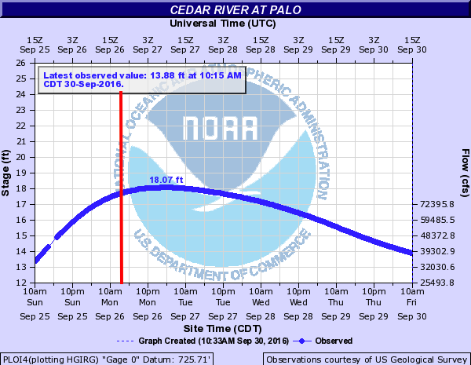
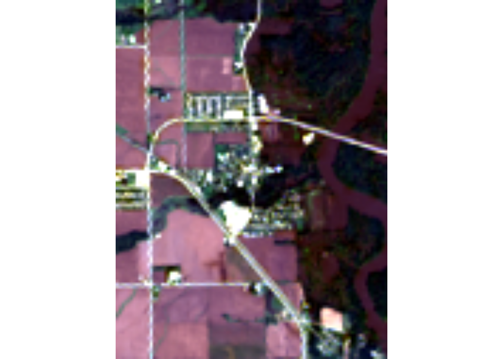
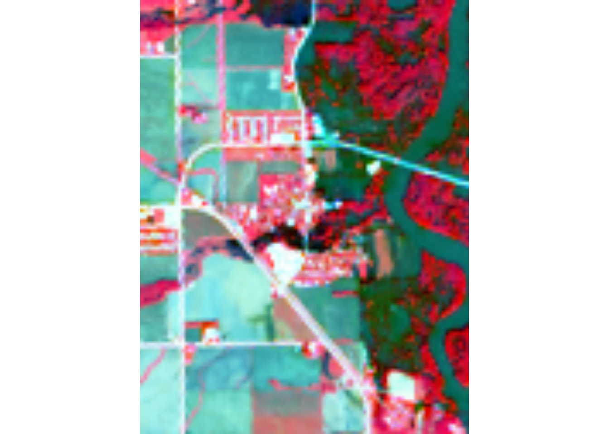
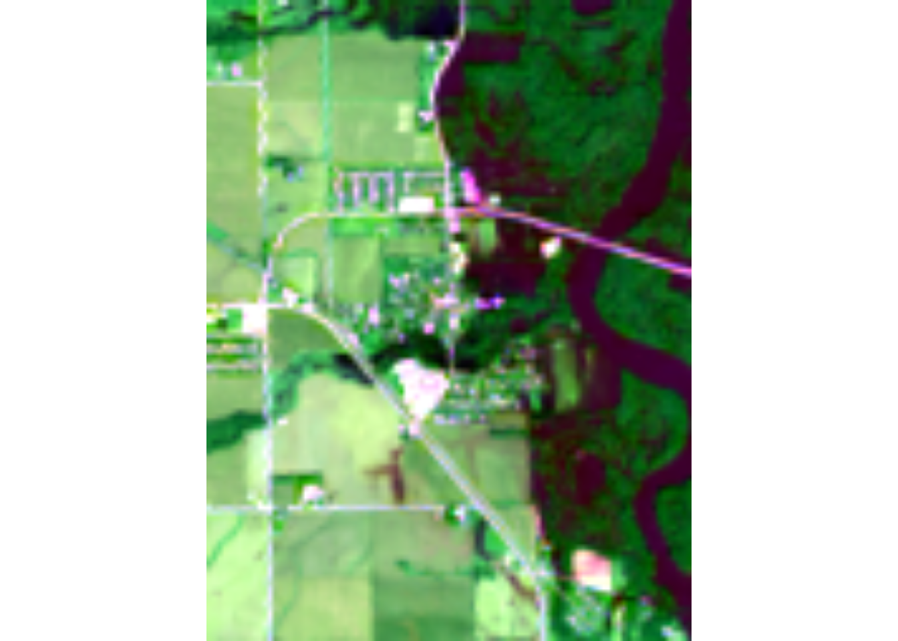
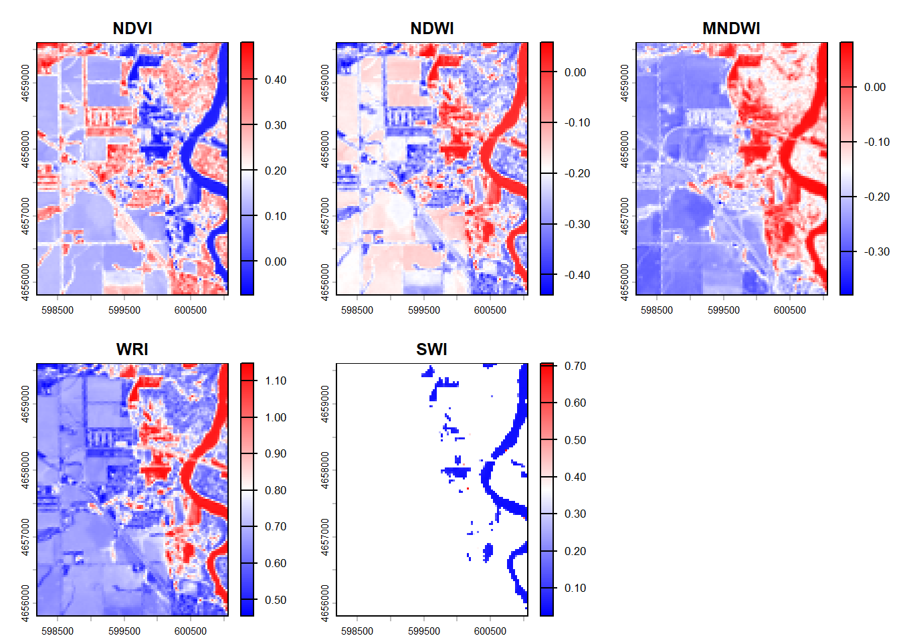
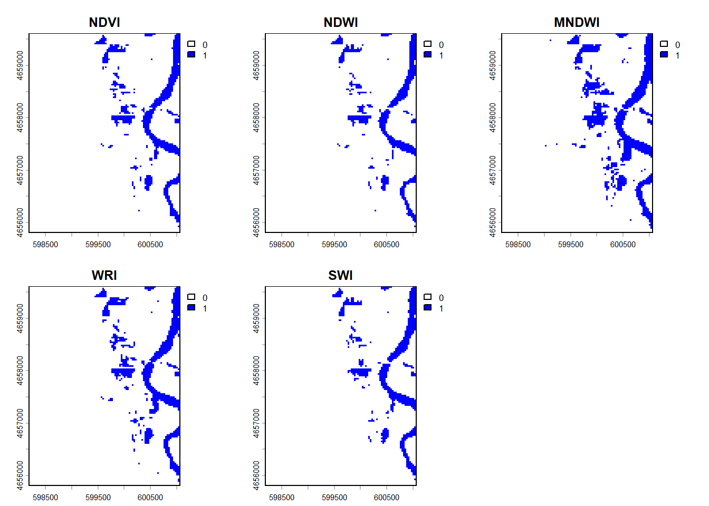
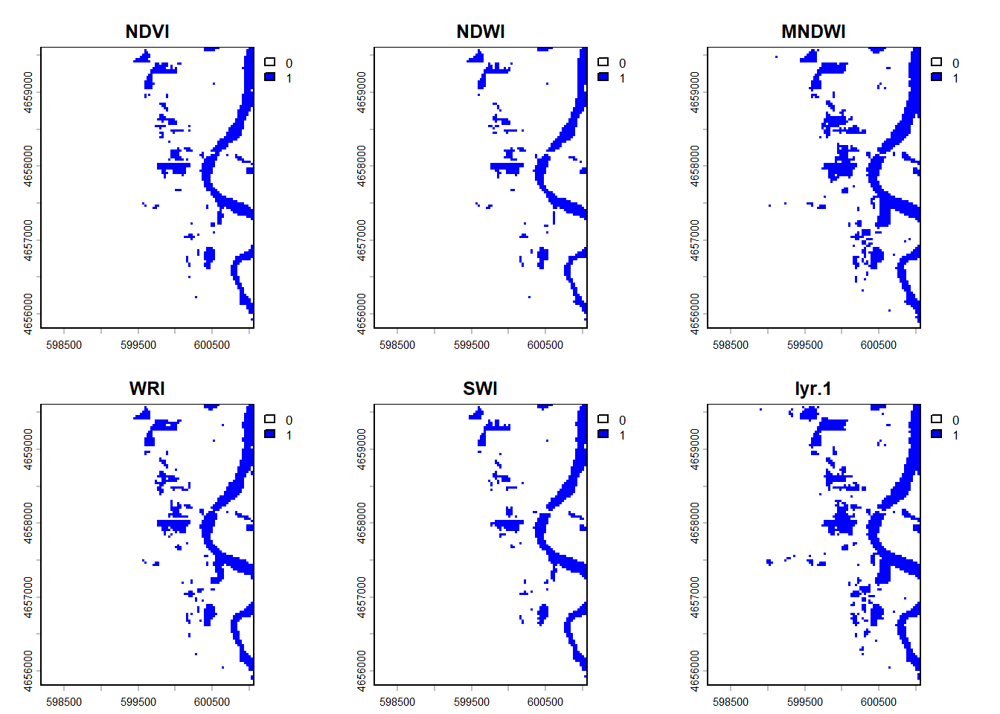
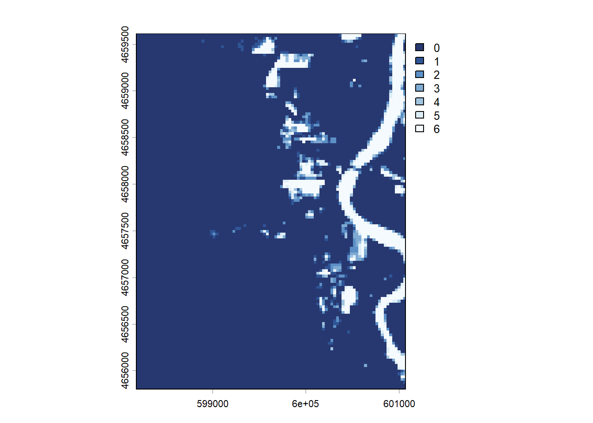

Lab 4: Rasters & Remote Sensing
Palo Iowa Flooding
Background
On September 26, 2016 at 11:47 a.m. U.S. Central Daylight Time (16:47 UTC) the Cedar and Wapsipinicon rivers in Iowa surged producing a flood wave that breached the river banks. The water level of the Cedar River measured ~20 feet — 8 feet above flood stage—near the city of Cedar Rapids.
The water level continued to rise until it peaked at ~22 feet on September 27. This event had only been exceeded once, in June 2008, when thousands of people were encouraged to evacuate from Cedar Rapids, the second-most-populous city in Iowa.

In this lab we are interested in the impacts in Palo Iowa because it is up stream of Cedar Rapids, contains a large amount of farm land, and does not have a forecast location to provide warning.
We will use the terra and rstac packages - along with our understanding of raster data and categorization - to create flood images using mutliband Landsat Imagery, thresholding, and classification methods.
Libraries
library(rstac) # STAC API
library(terra) # Raster Data handling
library(sf) # Vector data processing
library(mapview) # Rapid Interactive visualization
library(tidyverse)Almost all remote sensing / image analysis begins with the same basic steps:
Identify an area of interest (AOI)
Identify the temporal range of interest
Identify the relevant images
Download the images
Analyze the products
Step 1: AOI identification
First we need to identify an AOI. We want to be able to extract the flood extents for Palo, Iowa and its surroundings. To do this we will use the geocoding capabilities within the AOI package.
# Bounding box around Palo, IA
bbox_palo <- AOI::geocode("Palo, Iowa", bbox = TRUE)Step 2: Temporal identification
The flood event occurred on September 26, 2016. A primary challenge with remote sensing is the fact that all satellite imagery is not available at all times. In this case Landsat 8 has an 8 day revisit time. To ensure we capture an image within the date of the flood, lets set our time range to the period between September 24th - 29th of 2016. We will define this duration in the form YYYY-MM-DD/YYYY-MM-DD.
# Flood occurred Sept 26, 2016; search Sept 24–29 for cloud-free imagery
temporal_range <- "2016-09-24/2016-09-29"Step 3: Identifying the relevant images
The next step is to identify the images that are available for our AOI and time range. This is where the rstac package comes in. The rstac package provides a simple interface to the SpatioTemporal Asset Catalog (STAC) API, which is a standard for discovering and accessing geospatial data.
STAC is a specification for describing geospatial data in a consistent way, making it easier to discover and access datasets. It provides a standardized way to describe the metadata of geospatial assets, including their spatial and temporal extents, data formats, and other relevant information.
Catalog: A catalog is a collection of STAC items and collections. It serves as a top-level container for organizing and managing geospatial data. A catalog can contain multiple collections, each representing a specific dataset or group of related datasets.
Items: The basic unit of data in STAC. Each item represents a single asset, such as a satellite image or a vector dataset. Items contain metadata that describes the asset, including its spatial and temporal extents, data format, and other relevant information.
Asset: An asset is a specific file or data product associated with an item. For example, a single satellite image may have multiple assets, such as different bands or processing levels. Assets are typically stored in a cloud storage system and can be accessed via URLs.
For this project we are going to use a STAC catalog to identify the data available for our analysis. We want data from the Landsat 8 collection which is served by the USGS (via AWS), Google, and Microsoft Planetary Computer (MPC). MPC is the one that provides free access so we will use that data store.
If you go to this link you see the JSON representation of the full data holdings. If you CMD/CTL+F on that page for Landsat you’ll find the references for the available data stores.
Within R, we can open a connection to this endpoint with the stac function:
# Open a connection to the MPC STAC API
(stac_query <- stac("https://planetarycomputer.microsoft.com/api/stac/v1"))###rstac_query
- url: https://planetarycomputer.microsoft.com/api/stac/v1/
- params:
- field(s): version, base_url, endpoint, params, verb, encodeThat connection will provide an open entry to ALL data hosted by MPC. The stac_search function allows us to reduce the catalog to assets that match certain criteria (just like dplyr::filter reduces a data.frame). The get_request() function sends your search to the STAC API returning the metadata about the objects that match a criteria. The service implementation at MPC sets a return limit of 250 items (but it could be overridden with the limit parameter).
Here, we are interested in the “Landsat Collection 2 Level-2” data. From the JSON file (seen in the browser). To start, lets search for that collection using the stac -> stac_search –> get_request workflow refining your search to our AOI and time range of interest.
The last thing we need to do, is sign this request. In rstac, items_sign(sign_planetary_computer()) signs STAC item asset URLs retrieved from Microsoft’s Planetary Computer, ensuring they include authentication tokens for access. sign_planetary_computer() generates the necessary signing function, and items_sign() applies it to STAC items. This is essential for accessing datasets hosted on the Planetary Computer, and other catalog were data access might be requester-paid or limited.
#spatial and temporal filter
(search <- stac_query |>
stac_search(
collections = "landsat-c2-l2",
bbox = st_bbox(bbox_palo),
datetime = temporal_range, #date before and after flood
limit = 1 )|>
get_request() |>
items_sign(sign_planetary_computer()))###Items
- features (1 item(s)):
- LC08_L2SP_025031_20160926_02_T1
- assets:
ang, atran, blue, cdist, coastal, drad, emis, emsd, green, lwir11, mtl.json, mtl.txt, mtl.xml, nir08, qa, qa_aerosol, qa_pixel, qa_radsat, red, rendered_preview, swir16, swir22, tilejson, trad, urad
- item's fields:
assets, bbox, collection, geometry, id, links, properties, stac_extensions, stac_version, typeWith that, we are ready to download the data using assets_download(). In total, a Landsat 8 item has the following 11 bands:

For this lab, lets just get the first 6 bands. Assets are extracted from a STAC item by the asset name (look at the print statements of the stac_query). Let’s define a vector of the assets we want:
# Bands 1-6
bands <- c('coastal', 'blue', 'green', 'red', 'nir08', 'swir16')Now we can use the assets_download() function to download the data. The output_dir argument specifies where to save the files, and the overwrite argument specifies whether to overwrite existing files with the same name.
assets_download(
items = search,
asset_names = bands,
output_dir = "data",
overwrite = TRUE) #change to false when not rendering###Items
- features (1 item(s)):
- LC08_L2SP_025031_20160926_02_T1
- assets: blue, coastal, green, nir08, red, swir16
- item's fields:
assets, bbox, collection, geometry, id, links, properties, stac_extensions, stac_version, typeAnd that does it! You now have the process needed to get you data.
With a set of local files, you can create a raster object! Remember your files need to be in the order of the bands (double check step 2). - list.files() can search a directory for a pattern and return a list of files. The recursive argument will search all sub-directories. The full.names argument will return the full path to the files.
The
rast()function will read the files into a raster object.The
setNames()function will set the names of the bands to the names we defined above.
# List downloaded Landsat band files (TIF format)
raster_files <- list.files(
path = "data",
pattern = "*.TIF$",
full.names = TRUE,
recursive = TRUE)
# Sort to ensure consistent band order
raster_files <- sort(raster_files)[1:6]
# Stack into a single SpatRaster object
landsat_stack <- rast(raster_files)
landsat_stack <- setNames(landsat_stack, bands)Question 1: Data Access
Download all the data needed for this lab. What are the dimensions of your stacked image? What is the CRS? What is the cell resolution?
The dimensions of the stacked image are 7801 rows, 7681 columns, and 6 layers. It’s reference coordinate system is in WGS84 and the cell resolution is 30m x 30m.
landsat_stackclass : SpatRaster
size : 7801, 7681, 6 (nrow, ncol, nlyr)
resolution : 30, 30 (x, y)
extent : 518085, 748515, 4506885, 4740915 (xmin, xmax, ymin, ymax)
coord. ref. : WGS 84 / UTM zone 15N (EPSG:32615)
sources : LC08_L2SP_025031_20160926_20200906_02_T1_SR_B1.TIF
LC08_L2SP_025031_20160926_20200906_02_T1_SR_B2.TIF
LC08_L2SP_025031_20160926_20200906_02_T1_SR_B3.TIF
... and 3 more sources
names : coastal, blue, green, red, nir08, swir16 Step 5: Analyize the images
We only want to analyze our image for the regions surrounding Palo (our AOI). Transform your AOI to the CRS of the landsat stack and use it to crop your raster stack.
# Transform AOI to match raster CRS (UTM zone 15N)
palo_utm <- bbox_palo %>%
st_transform(crs(landsat_stack))
# Crop the full scene to study area (saves memory, speeds processing)
landsat_crop <- crop(landsat_stack, palo_utm)Awesome! We have now (1) identified, (2) downloaded, and (3) saved our images.
We have loaded them as a multiband SpatRast object and cropped the domain to our AOI. Lets make a few RGB plots to see what these images reveal.
Note
There are many online examples that discuss the applications of the available bands in Landsat. What we want to do here is simply show how loading different combinations into the RGB channels make different features stand out. A useful reference of popular band combinations is here.
Question 2: Data Visualization
Standard cameras replicate whats seen with the human eye, by capturing light in the red, green and blue wavelengths and applying red, green ,and blue filters (channels) to generate a natural looking RGB image.
With a multispectral Landsat 8 image, we have more information to work with and different wavelengths/combinations can help isolate particular features.
For example, the Near Infrared (NIR) wavelength is commonly used to analysis vegetation health because vegetation reflects strongly in this portion of the electromagnetic spectrum. Alternatively, the Shortwave Infrared (SWIR) bands are useful for discerning what is wet and dry.
When working with Landsat imagery, a logical first step is to load an image into an image analysis program (like ENVI) to visualize whats in the scene. We can do the same thing with R using the plotRGB function and selecting which band should populate each channel.
stretching is a common technique used to enhance the contrast of an image by adjusting the brightness and contrast of the pixel values. This is done by mapping the pixel values to a new range, which can help to highlight certain features in the image. In R, the stretch argument in the plotRGB function allows you to apply different stretching methods to enhance the visual appearance of the image. Test the different stretch options (“lin” and “hist”) and see how they affect the image.
For question 2, make four unique combinations:
- R-G-B (natural color)
- NIR-R-G (fa) (color infared)
- NIR-SWIR1-R (false color water focus)
- Your choice
What does each image allow you to see?
RGB Image: You can see water as the dark spots, streets and urban areas as gray, and the vegetation as green.
plotRGB(landsat_crop, r = 4, g = 3, b = 2, stretch = "lin",
main = "Natural Color: Red-Green-Blue")
NIR-R-G (fa) (color infrared) Image: This image allows you to see healthy vegetation in bright red, water in dark real, and less healthy vegetation in light blue/green.
plotRGB(landsat_crop, r = 5, g = 4, b = 2, stretch = "hist",
main = "Color Infrared: NIR-Red-Green\n(Bright red = healthy vegetation)")
NIR-SWIR1-R (false color water focus) Image: This really distinguishes water from vegetation. Water is shown as a dark blue, healthy vegetation as bright orange, and less healthy vegetation as light green. Urban areas and roads can also be seen in gray.
plotRGB(landsat_crop, r = 5, g = 6, b = 4, stretch = "lin",
main = "Water Focus: NIR-SWIR1-Red\n(Dark blue = open water/flooding)")
Mystery Image: Using this combination dramatically shows the difference between water (dark purple) and healthy vegetation (vibrant green). Roads and urban spaces are a light teal color and less healthy vegetation is light green.
plotRGB(landsat_crop, r = 4, g = 6, b = 2, stretch = "lin",
main = "Water Focus: NIR-SWIR1-Red\n(Dark blue = open water/flooding)")
Question 3: Indeces and Thresholds
Accurate assessment of surface water features (like flooding) have been made possible by remote sensing technology. Index methods are commonly used for surface water estimation using a threshold value.
For this lab we will look at 5 unique thresholding methods for delineating surface water features from different combinations of Landsat bands listed below:
| Name | Abbreviation | Formula | Water Threshold |
|---|---|---|---|
| Normalized difference vegetation index | NDVI | \[ \frac{NIR - Red}{NIR + Red} \] | Cells less then 0 |
| Normalized Difference Water Index | NDWI | \[ \frac{Green - NIR}{Green + NIR} \] | Cells greater then 0 |
| modified | |||
| normalized difference water index | MNDWI | \[ \frac{Green - SWIR1}{Green + SWIR1} \] | Cells greater then 0 |
| water ratio index | WRI | \[ \frac{Green + Red}{NIR + SWIR1} \] | Cells greater then 1 |
| simple water index | SWI | \[ \frac{1}{\sqrt{Blue - SWIR1}} \] | Cells less then 5 |
Step 1: Raster Algebra
- Create 5 new rasters using the formulas for NDVI, NDWI, MNDWI, WRI and SWI
- Combine those new rasters into a stacked object (
c()) - Set the names of your new stack to useful values
- Plot the new stack, using the following palette (
colorRampPalette(c("blue", "white", "red"))(256))
#the 5 indices
ndvi <- (landsat_crop$nir08 - landsat_crop$red) / (landsat_crop$nir08 + landsat_crop$red) # Cells less than 0 = water
ndwi <- (landsat_crop$green - landsat_crop$nir08) / (landsat_crop$green + landsat_crop$nir08) #Cells greater than 0 = water
mndwi <- (landsat_crop$green - landsat_crop$swir16) / (landsat_crop$green + landsat_crop$swir16) #Cells greater than 0 = water
wri <- (landsat_crop$green + landsat_crop$red) / (landsat_crop$nir08 + landsat_crop$swir16)# Cells greater than 1 = water
swi <- ( 1 /(sqrt(landsat_crop$blue - landsat_crop$swir16))) #Cells less than 5 = water
#combines multiple spatraster layers into one multi layer
idx <- c(ndvi, ndwi, mndwi, wri, swi)
#name the layers
idx <- setNames(idx, c("NDVI","NDWI","MNDWI","WRI","SWI"))
#plot all 5 layers:
plot(idx, col = colorRampPalette(c("blue","white","red"))(256))
Describe the 5 images. How are they simular and where do they deviate?
All of these images distinguish between water,vegetation, and urban areas/roads. However, what they consider to be water, roads, and vegetation does differ.
NDVI shows the river as dark blue, but also shows a water background in the vegetation plots. clustered forested areas along urban spaces, roads, and waterways are red, and roads and buildings are white.
NDWI shows water as red and like NDVI, the vegetation plots are considered wet. Roads are harder to view, because of the lighter blue color.
MDNWI shows wet areas in red and the areas are much sharper between wet and dry. It does show that the vegetation plots are not considered wet.
WRI also has a sharper contrast between wet (red) and dry (blue). It does show varying levels of dryness in the vegetation and roads are also covered in blue.
SWI only outlines what is considered wet in blue. It looks as if the image was cropped to only show wet shapes.
Step 2: Raster Thresholding
Here we will extract the flood extents from each of the above rasters using the thresholds defined in the above table.
For this, we will use the app function and apply a custom formula for each calculated field from step 1 that applies the threshold in a way that flooded cells are 1 and non-flooded cells are 0.
An example of this, applied to the ndvi raster is shown below:
# Apply thresholds specific to each index
ndvi_flood <- app(ndvi, function(x) ifelse(x < 0, 1, 0))# NDVI < 0 = water
ndwi_flood <- app( ndwi, function(x) ifelse(x > 0 , 1, 0)) #ndwi > 0 =water
mndwi_flood <- app(mndwi, function(x) ifelse(x > 0 , 1, 0))
wri_flooded <- app(wri, function(x) ifelse(x > 1, 1, 0)) #wri > 1 = flooded
swi_flooded <- app(swi, function(x) ifelse(x < 5, 1, 0)) #swi >5 = floodedThe app function applies a function to each cell of the raster, and the ifelse function is used to set the values based on the threshold.
For all 5 index rasters do the following apply the appropriate threshold and then do the following:
- Stack the binary ([0,1]) files into a new stack (
c()), - Set the names to meaningful descriptions (
setNames) - Perform one more classifier (
app) making sure that all NA values are set to zero. - Plot the stack so that floods are blue, and background is white.
#stack binary rasters
flood_stack <- c(ndvi_flood, ndwi_flood, mndwi_flood, wri_flooded, swi_flooded)
#name index
flood_stack <- setNames(flood_stack, c("NDVI","NDWI","MNDWI","WRI","SWI"))
#Converts missing values -> non-flood (0)
flood_stack <- app(flood_stack, function(x) ifelse(is.na(x), 0, x))
#plot
plot(flood_stack, col = c("white","blue")) #white no flood (0), blue is flood (1)
Step 3:
Describe the differences and similarities between the different maps:
They all share the same general shape for things considered wet (river and surroundings ponds/ water bodies). There are some that include slightly more spots/areas as wet and others that don’t though. The MNDWI appears to have a larger wet buffer around the river and things considered wet than the other indices.
Question 4:
An alternative way to identify similar features in a continuous field is through supervised or unsupervised classification. Supervised classification groups values (cells) based on user supplied “truth” locations. Since flood events are fast-occurring there is rarely truth points for a live event. Instead developers rely on libraries of flood spectral signatures.
Unsupervised classification finds statistically significant groupings within the data. In these clustering algorithms, the user specifies the number of classes and the categorization is created based on the patterns in the data.
For this lab we will use a simple k-means algorithm to group raster cells with similar spectral properties.
Step 1:
Anytime we want to be able to produce a consistent/reproducible result from a random process in R we need to set a seed. Do so using set.seed
set.seed(123)Step 2:
- Extract the values from your 6-band raster stack with
values - Check the dimensions of the extracted values with
dim
What do the diminsions of the extracted values tell you about how the data was extracted?
There is 12192 rows, considered pixels, and 6 columns representing the bands. These dimensions tell us that the raster was converted into a matrix.
vals <- values(landsat_crop) #values() converts raster to matrix
dim(vals)[1] 12192 6- Remove NA values from your extracted data with
na.omitfor safety
vals <- na.omit(vals) #k means can't handle na valuesStep 3:
Use the kmeans clustering algorithm from the
statspackage to cluster the extracted raster data to a specified number of clustersk(centers). Start with 12.Once the
kmeansalgorithm runs, the output will be a list of components. One of these isclusterwhich provides a vector of integers from (1:k) indicating the cluster to which each row was allocated.
km <- kmeans(vals, centers = 12) #Groups pixels into 12 clusters based on spectral similarity. no longer spatial
km$cluster [1] 8 8 8 8 8 8 8 8 8 8 8 8 8 5 8 2 3 3 3 12 12 11 12 5
[25] 8 8 8 10 11 11 5 10 11 11 11 1 11 11 1 1 1 1 11 11 1 11 11 11
[49] 11 1 12 1 1 1 1 1 10 10 1 1 1 1 11 11 1 1 10 10 1 1 1 10
[73] 11 4 4 4 4 4 4 4 11 1 10 1 10 1 1 1 1 10 10 10 4 4 4 4
[97] 8 8 8 8 8 8 8 8 8 8 8 8 8 8 5 10 1 3 3 12 12 12 3 12
[121] 10 5 5 1 11 10 8 5 1 11 11 1 11 11 1 11 1 11 4 11 11 4 4 4
[145] 11 4 12 11 11 11 11 11 1 1 10 1 11 11 11 11 1 1 1 10 10 1 1 1
[169] 11 4 4 4 4 4 4 4 11 1 10 10 1 1 1 1 10 10 10 1 4 4 4 4
[193] 8 8 8 8 10 1 1 5 8 8 8 8 8 1 12 3 5 3 3 6 12 11 11 4
[217] 11 10 1 11 10 8 8 10 1 11 11 11 11 4 11 11 1 11 11 4 4 4 4 4
[241] 4 11 12 1 1 10 1 1 11 1 10 10 11 1 1 11 10 1 1 1 10 1 10 10
[265] 1 4 4 4 4 11 1 1 1 10 10 10 10 10 10 10 10 10 10 11 4 4 4 4
[289] 3 3 3 3 12 1 1 11 11 1 2 8 5 3 3 5 8 3 3 3 11 11 1 12
[313] 10 10 5 5 5 5 10 11 11 11 11 11 4 11 11 11 1 11 4 4 4 4 4 4
[337] 4 11 12 12 10 10 10 1 1 11 1 11 11 11 1 1 1 1 10 1 1 1 10 10
[361] 10 1 1 11 1 1 1 1 1 10 1 10 10 10 10 10 10 10 10 4 4 4 4 11
[385] 12 12 12 6 12 1 10 10 1 10 5 8 8 5 8 5 5 5 10 12 11 10 5 5
[409] 5 8 8 8 10 11 11 11 1 10 1 11 4 4 11 11 11 4 4 4 4 4 4 4
[433] 4 4 3 10 10 10 10 10 1 11 1 11 11 1 10 1 1 10 1 1 1 1 1 1
[457] 1 11 1 1 11 11 4 11 1 10 10 10 10 10 10 10 10 10 1 4 4 4 4 11
[481] 1 10 1 10 11 1 1 10 3 10 3 3 3 1 1 10 10 1 1 10 5 8 5 5
[505] 5 8 8 8 5 1 1 10 5 8 10 1 11 4 1 11 11 4 4 4 4 4 4 4
[529] 4 11 3 1 1 1 1 10 10 1 10 1 1 10 10 10 10 10 1 1 1 1 1 1
[553] 11 11 11 11 11 1 11 11 10 10 1 10 1 1 10 10 10 10 11 4 4 4 4 11
[577] 10 10 10 1 10 10 1 1 10 1 1 1 1 1 10 10 10 10 3 3 5 5 5 8
[601] 5 3 3 3 3 3 3 3 3 3 5 1 11 11 11 11 11 4 4 4 4 4 4 4
[625] 4 11 6 4 4 4 11 11 11 11 11 11 11 11 11 1 10 10 1 10 10 10 1 10
[649] 1 1 1 10 10 10 10 10 10 1 11 11 11 10 10 10 10 1 11 4 4 4 4 4
[673] 10 1 1 1 10 10 10 10 1 10 3 5 5 3 6 6 6 6 6 6 6 6 3 2
[697] 3 6 6 6 6 6 6 6 6 6 6 3 1 11 1 10 5 1 1 1 11 4 11 1
[721] 11 12 12 4 4 4 4 4 4 4 4 4 4 4 4 1 1 1 11 1 1 10 1 11
[745] 1 1 1 10 10 10 10 10 10 1 11 11 1 1 10 10 10 1 11 4 4 4 4 4
[769] 10 10 10 10 10 5 5 5 5 5 8 5 3 6 6 6 6 6 6 6 6 6 6 2
[793] 3 6 6 6 6 6 6 6 6 6 6 6 6 6 6 6 6 6 3 3 6 12 3 2
[817] 2 12 4 4 4 4 4 4 4 4 4 4 4 4 11 11 11 11 11 11 11 1 1 1
[841] 1 1 10 10 10 1 10 10 1 11 11 11 10 10 10 10 1 1 4 4 4 4 4 4
[865] 8 8 8 8 5 5 8 8 8 5 5 3 6 6 6 6 6 6 6 6 6 6 6 2
[889] 3 6 6 6 6 6 6 6 6 6 6 6 6 6 6 6 6 6 6 9 2 3 10 5
[913] 2 12 4 4 4 4 4 4 4 4 4 4 4 4 1 1 1 1 10 1 11 11 10 10
[937] 1 1 10 10 10 1 11 11 4 4 11 10 10 1 10 10 1 1 4 4 4 4 4 4
[961] 8 8 8 8 8 8 8 8 5 6 3 9 6 6 6 6 6 6 6 6 6 6 3 2
[985] 6 6 6 6 6 6 6 6 6 6 6 6 6 6 6 6 6 6 5 5 2 5 5 5
[1009] 6 4 4 4 4 4 4 4 4 4 4 4 4 11 1 1 1 10 1 1 1 11 1 1
[1033] 10 1 1 1 1 1 11 11 11 11 10 10 10 1 10 1 1 10 4 4 4 4 4 4
[1057] 8 8 8 8 8 8 8 3 6 6 2 6 6 6 6 6 6 6 6 6 6 6 3 2
[1081] 3 6 6 6 6 6 6 6 6 6 6 6 6 6 6 6 6 6 5 5 3 5 8 2
[1105] 11 4 4 4 4 4 4 4 4 4 4 4 4 4 1 10 10 1 10 1 1 1 11 1
[1129] 1 1 1 1 1 1 1 1 11 11 1 10 10 10 1 11 1 1 11 4 4 4 4 11
[1153] 8 8 8 8 8 8 2 6 6 6 2 6 6 6 6 6 6 6 6 6 6 6 3 2
[1177] 3 6 6 6 6 6 6 6 6 6 6 6 6 6 6 6 6 6 5 5 5 5 2 12
[1201] 4 4 4 11 11 11 11 11 11 1 11 11 11 11 1 1 10 1 1 10 1 11 11 11
[1225] 1 1 1 10 1 1 1 1 11 11 1 1 1 10 1 11 11 1 4 4 4 4 4 4
[1249] 8 8 2 2 8 7 8 6 6 6 2 9 6 6 6 6 6 6 6 6 6 6 9 2
[1273] 3 6 6 6 6 6 6 6 6 6 6 6 6 6 6 6 6 12 5 5 5 8 2 4
[1297] 4 4 11 1 10 1 10 10 10 10 10 1 10 10 1 1 10 1 1 1 1 1 11 11
[1321] 11 11 1 1 11 11 10 10 1 1 11 1 1 1 1 11 11 1 11 4 4 4 4 4
[1345] 8 8 2 3 8 2 2 6 6 6 3 9 6 6 6 6 6 6 6 6 6 6 3 8
[1369] 6 6 6 6 6 6 6 6 6 6 6 6 6 6 6 6 6 12 5 5 5 2 12 4
[1393] 4 4 4 1 10 10 10 10 10 10 10 10 10 10 10 10 10 10 1 1 1 1 1 11
[1417] 11 11 1 1 1 1 1 1 1 1 11 10 10 10 1 11 11 1 11 4 4 4 4 4
[1441] 8 8 2 5 8 8 8 9 6 6 2 9 6 6 6 6 6 6 6 6 6 6 3 2
[1465] 3 6 6 6 6 6 6 6 6 6 6 6 6 6 6 6 6 6 5 2 5 2 4 4
[1489] 4 4 4 1 1 10 10 10 10 1 10 10 1 10 1 10 10 10 1 1 1 10 1 1
[1513] 11 11 1 1 1 11 11 11 1 1 1 10 1 1 1 1 1 1 4 4 4 4 4 4
[1537] 2 2 2 2 2 2 2 2 2 2 2 6 6 6 6 6 6 6 6 6 6 6 3 8
[1561] 3 6 6 6 6 6 6 6 6 6 6 6 6 6 6 6 6 6 5 2 2 12 4 4
[1585] 4 4 4 11 1 1 10 1 1 1 10 10 10 1 1 10 10 1 1 1 1 1 10 1
[1609] 1 1 11 1 11 4 11 1 1 11 11 1 1 1 1 10 10 1 4 4 4 4 4 4
[1633] 6 6 6 6 6 6 6 6 6 6 2 9 6 6 6 6 6 6 6 6 6 6 3 8
[1657] 3 6 6 6 6 6 6 6 6 6 6 6 6 6 6 6 6 6 3 5 2 12 4 4
[1681] 4 4 4 11 11 1 1 1 11 1 10 1 1 1 1 10 10 1 1 1 10 10 1 1
[1705] 10 1 1 11 4 11 11 11 11 11 1 1 10 10 10 1 10 10 4 4 4 4 4 11
[1729] 6 6 6 6 6 6 6 6 6 6 9 2 6 6 6 6 6 6 6 6 6 6 3 8
[1753] 3 6 6 6 6 6 6 6 6 6 6 6 6 6 6 6 6 6 5 5 2 4 4 4
[1777] 4 4 4 11 11 1 1 1 11 1 1 1 1 11 1 1 1 10 10 1 10 10 1 1
[1801] 1 11 1 11 4 11 1 4 11 1 10 1 10 10 10 10 1 10 11 4 4 4 4 1
[1825] 6 6 6 6 6 6 6 6 6 6 2 2 6 6 6 6 6 6 6 6 6 6 3 2
[1849] 2 9 6 6 6 9 3 6 6 9 3 6 6 3 3 3 6 3 8 8 2 11 4 11
[1873] 11 11 11 1 11 1 10 1 4 11 1 1 11 11 1 10 10 10 10 1 1 1 10 1
[1897] 10 10 10 10 11 1 10 1 10 1 10 1 10 10 1 10 1 10 11 4 4 4 4 1
[1921] 6 6 6 6 6 6 6 6 6 6 2 9 9 9 9 9 9 9 9 9 9 9 9 2
[1945] 2 9 9 9 6 6 6 9 9 6 6 6 6 6 9 9 9 5 8 8 2 11 11 11
[1969] 11 11 11 11 11 11 1 1 4 11 11 11 1 11 11 11 1 10 10 10 10 10 10 1
[1993] 1 10 1 1 1 1 10 10 10 1 1 1 1 10 10 10 10 1 4 4 4 4 4 4
[2017] 6 6 6 6 6 6 6 6 6 6 2 9 9 9 9 9 9 9 9 9 9 6 9 8
[2041] 2 6 6 6 6 6 6 6 6 6 6 6 6 6 9 9 9 3 5 8 5 11 4 4
[2065] 4 11 1 11 11 11 1 11 4 4 11 11 11 11 11 11 10 10 10 10 10 10 1 1
[2089] 10 1 1 1 10 10 10 10 10 1 1 1 1 10 10 10 10 1 4 4 4 4 4 4
[2113] 6 6 6 6 6 6 6 6 6 6 9 2 9 9 9 9 9 9 9 9 9 6 9 2
[2137] 9 6 6 6 6 6 6 6 6 6 6 6 6 6 9 9 9 3 7 2 2 11 4 4
[2161] 4 4 11 10 1 11 1 11 4 4 11 11 11 11 1 1 1 10 10 1 10 10 1 10
[2185] 10 1 1 1 10 10 10 1 1 1 1 1 1 1 10 1 10 1 4 4 4 4 4 4
[2209] 6 6 6 6 6 6 6 6 6 6 9 2 9 9 9 9 9 9 9 9 9 9 9 2
[2233] 9 6 6 6 6 6 6 6 6 6 6 6 6 6 9 9 6 5 3 2 5 12 11 11
[2257] 11 11 11 10 1 11 1 1 11 11 11 1 1 11 1 11 11 1 1 1 10 10 10 10
[2281] 1 1 1 1 10 1 1 1 11 10 1 1 1 1 1 10 10 11 4 4 4 4 4 4
[2305] 6 6 6 6 6 6 6 6 6 6 2 2 9 9 3 3 9 9 9 9 9 9 9 2
[2329] 2 6 6 6 6 6 6 6 6 6 6 6 6 6 9 9 9 5 5 5 5 3 1 1
[2353] 1 1 11 1 1 4 4 11 1 1 11 11 11 11 11 11 1 1 1 10 10 10 1 1
[2377] 10 1 1 1 1 1 1 1 1 1 1 1 1 1 1 1 1 4 4 4 4 4 4 4
[2401] 6 6 6 6 6 6 6 6 6 6 2 9 9 6 6 9 9 9 9 9 9 9 9 2
[2425] 2 6 6 6 6 6 6 6 6 6 6 6 6 9 9 9 9 3 5 5 8 2 11 1
[2449] 1 11 11 1 1 4 4 4 11 10 1 11 1 11 11 1 10 10 10 10 1 1 1 1
[2473] 10 10 10 1 1 10 10 1 1 1 1 1 1 1 1 1 1 4 4 4 4 4 4 4
[2497] 6 6 6 6 6 6 6 6 6 6 9 2 9 9 9 9 9 9 9 9 9 9 9 2
[2521] 2 6 6 6 6 6 6 6 6 6 6 6 6 6 6 6 6 3 8 5 5 2 12 11
[2545] 1 11 1 1 1 11 4 4 4 11 1 1 11 11 11 1 10 10 10 10 1 1 1 1
[2569] 1 10 1 1 10 10 1 1 1 1 1 1 1 1 1 10 11 4 4 4 4 4 4 4
[2593] 6 6 6 6 6 6 6 6 6 6 9 2 9 9 9 9 9 9 9 9 9 9 9 2
[2617] 2 6 6 6 6 6 6 6 6 6 6 6 6 6 6 6 6 9 9 9 9 2 12 11
[2641] 1 1 1 1 1 1 11 4 4 11 1 1 11 11 11 11 1 1 10 10 1 1 1 1
[2665] 1 1 11 1 10 1 1 1 10 1 10 1 1 1 1 10 4 4 4 4 4 4 4 11
[2689] 6 6 6 6 6 6 6 6 6 6 2 2 9 9 9 9 9 6 9 9 9 9 9 2
[2713] 2 6 6 6 6 6 6 6 6 6 6 6 6 6 6 6 6 6 9 6 6 9 3 11
[2737] 11 1 1 1 1 11 1 11 4 11 1 11 4 4 11 11 11 10 1 1 10 10 10 1
[2761] 1 11 1 10 10 1 1 10 1 1 10 1 1 1 1 1 4 4 4 4 4 4 4 4
[2785] 6 6 6 6 6 6 6 6 6 6 2 9 9 9 9 9 9 9 9 2 2 9 9 8
[2809] 8 6 6 6 6 6 6 6 6 6 6 6 6 6 6 6 6 6 9 6 6 6 3 1
[2833] 11 11 1 1 11 4 11 11 11 11 11 4 4 4 11 11 11 1 1 1 1 10 10 1
[2857] 1 10 10 1 10 1 1 1 11 1 1 10 10 10 10 1 4 4 4 4 4 4 4 4
[2881] 6 6 6 6 6 6 6 6 6 6 9 2 3 6 3 3 6 6 6 6 6 9 2 8
[2905] 8 6 6 6 6 6 6 6 6 6 6 6 6 6 6 6 6 9 9 6 6 6 9 12
[2929] 11 1 10 11 11 4 4 11 1 1 11 11 4 4 11 11 11 1 1 1 10 10 10 10
[2953] 1 10 10 10 10 1 1 11 1 1 1 1 10 10 10 11 4 4 4 4 4 11 4 4
[2977] 6 6 6 6 6 6 6 6 6 6 3 8 8 10 1 10 3 6 6 6 3 6 3 8
[3001] 2 6 6 6 6 6 6 6 6 6 6 6 6 6 6 6 6 9 9 6 6 6 9 3
[3025] 10 1 1 11 11 4 4 4 11 11 4 11 4 11 11 11 11 11 11 11 10 10 1 10
[3049] 10 10 10 10 1 1 1 11 1 1 1 10 10 10 10 4 4 4 4 4 4 11 4 4
[3073] 6 6 6 6 6 6 6 6 6 6 9 8 5 5 5 10 12 12 6 6 6 6 9 2
[3097] 5 3 5 3 3 3 5 5 3 3 5 5 5 5 2 3 5 5 5 5 5 5 5 2
[3121] 3 1 11 11 4 4 4 4 4 4 4 4 4 4 4 4 4 11 11 11 1 1 10 10
[3145] 10 10 1 1 11 1 1 1 1 1 10 10 10 10 1 4 4 4 4 4 11 1 11 4
[3169] 6 6 6 6 6 6 6 6 6 6 2 8 5 5 5 10 10 5 2 9 9 9 9 2
[3193] 8 2 5 5 8 5 5 5 5 5 5 5 8 8 5 5 5 5 5 5 5 5 5 2
[3217] 10 10 1 12 11 4 4 4 4 4 4 4 4 4 11 11 11 11 1 11 1 1 1 10
[3241] 10 10 1 11 11 1 1 1 1 1 10 1 1 1 4 4 4 4 4 4 1 1 11 11
[3265] 6 6 6 6 6 6 6 6 6 6 2 2 9 9 6 10 5 8 2 2 9 9 9 2
[3289] 8 8 2 5 2 2 2 2 3 2 2 2 2 5 5 2 2 5 5 2 2 2 2 2
[3313] 5 5 2 12 11 4 4 4 4 4 4 4 4 4 11 11 11 11 11 1 10 1 1 1
[3337] 10 1 1 1 1 1 1 10 1 1 1 1 11 11 4 4 4 4 4 4 1 1 1 1
[3361] 6 6 6 6 6 6 6 6 6 6 9 2 6 6 6 3 8 2 5 3 6 9 9 2
[3385] 5 3 2 5 5 3 5 5 2 3 5 5 2 5 8 2 5 5 5 5 5 5 5 2
[3409] 5 5 3 12 12 4 4 4 11 11 11 11 11 11 11 11 11 4 4 11 11 11 11 11
[3433] 11 11 11 11 11 11 1 1 1 1 1 11 4 4 4 4 4 4 4 11 1 1 1 1
[3457] 6 6 6 6 6 6 6 6 6 6 9 2 6 6 6 9 9 9 9 9 9 9 9 2
[3481] 5 2 3 5 5 2 5 5 2 3 8 3 2 8 5 2 5 5 8 5 5 5 5 2
[3505] 5 5 3 7 12 4 4 11 11 11 11 11 11 4 11 4 11 11 4 4 11 11 11 11
[3529] 11 1 11 11 1 11 11 11 11 1 1 11 4 4 4 4 4 4 4 11 1 1 11 1
[3553] 6 6 6 6 6 6 6 6 6 6 2 2 6 6 6 9 9 9 9 9 9 9 9 2
[3577] 8 2 3 5 3 2 3 8 2 3 8 3 2 5 5 2 8 5 5 5 3 2 2 2
[3601] 5 5 5 2 7 12 4 11 4 4 4 4 4 4 4 4 4 4 4 4 1 4 4 11
[3625] 1 1 11 11 1 1 11 11 11 1 1 4 4 4 4 4 4 4 4 11 1 11 11 1
[3649] 6 6 6 6 6 6 6 6 6 6 2 9 6 6 6 6 9 9 9 9 9 9 9 9
[3673] 8 5 2 5 5 2 3 8 2 2 5 5 2 3 8 5 5 5 5 5 5 5 5 2
[3697] 2 5 5 7 7 12 4 11 12 12 11 4 11 11 4 4 4 4 4 4 11 4 4 11
[3721] 1 1 11 11 11 1 11 11 1 1 4 4 4 4 4 4 4 4 4 11 11 11 11 11
[3745] 6 6 6 6 6 6 6 6 6 6 9 2 6 6 6 6 6 9 9 9 9 9 9 3
[3769] 8 8 2 5 5 2 5 5 2 2 5 5 3 5 2 7 7 7 7 7 2 8 8 2
[3793] 8 10 1 12 12 12 11 12 9 9 1 11 1 1 1 1 11 1 1 11 11 11 11 11
[3817] 1 10 1 11 1 1 1 1 10 1 4 4 4 4 4 4 4 4 11 1 11 11 11 11
[3841] 6 6 6 6 6 6 6 6 6 6 6 3 6 6 6 6 6 6 6 6 9 9 9 3
[3865] 8 5 2 8 5 2 2 8 5 8 8 5 2 5 7 7 7 7 7 7 2 8 8 2
[3889] 5 10 4 11 11 11 12 12 6 12 1 1 11 11 11 1 11 11 11 11 11 11 11 1
[3913] 11 1 1 11 1 1 11 1 11 11 4 4 4 4 4 4 4 4 11 1 1 1 1 1
[3937] 6 6 6 6 6 6 6 6 6 6 3 3 6 6 12 12 6 6 6 9 9 9 9 2
[3961] 8 8 2 8 8 8 8 8 8 8 8 8 2 2 7 7 7 7 7 7 2 5 2 7
[3985] 2 12 12 12 12 12 12 12 12 12 1 1 1 11 11 1 4 11 11 11 11 11 11 1
[4009] 11 1 1 11 1 1 1 11 4 4 4 4 4 4 4 4 4 1 1 1 1 1 1 10
[4033] 6 6 6 6 6 6 6 6 6 6 9 3 6 6 6 6 6 9 9 2 2 2 2 2
[4057] 2 2 2 2 2 2 2 2 2 2 2 2 2 8 5 5 5 5 5 3 3 3 3 2
[4081] 2 12 12 12 12 12 12 11 11 11 12 12 3 12 12 1 11 11 11 1 1 1 1 1
[4105] 1 11 11 1 11 1 11 4 4 4 4 4 4 4 4 4 11 1 1 1 1 1 10 1
[4129] 3 6 6 6 6 6 6 6 6 6 6 2 6 6 6 6 9 2 2 2 3 6 6 9
[4153] 5 5 8 8 8 8 8 5 8 8 8 8 8 8 5 10 5 5 5 10 10 10 5 2
[4177] 2 12 12 12 1 11 12 12 12 4 4 4 11 11 12 12 12 12 11 1 1 1 1 1
[4201] 1 1 11 11 11 1 4 4 4 4 4 4 4 4 11 11 1 11 11 11 11 1 1 11
[4225] 8 5 6 6 6 6 6 6 6 6 6 3 6 6 6 9 2 2 6 6 6 6 6 6
[4249] 5 8 8 8 2 8 8 8 8 5 5 8 8 8 5 5 5 5 5 5 5 5 5 2
[4273] 7 2 3 3 12 3 3 3 3 11 4 11 4 4 11 11 11 12 12 12 12 11 11 11
[4297] 1 1 1 11 11 11 4 4 4 4 4 4 4 11 1 11 1 11 1 1 11 1 10 4
[4321] 8 8 8 3 6 6 6 6 6 6 3 3 9 6 9 2 2 6 6 6 6 6 6 9
[4345] 5 8 8 8 8 8 8 8 8 2 2 2 8 8 5 3 5 5 5 5 5 5 5 5
[4369] 2 3 3 3 12 12 3 3 3 4 4 11 11 4 4 11 4 4 4 11 12 12 12 12
[4393] 12 11 11 1 4 4 4 4 4 4 4 11 1 10 10 1 1 11 1 10 1 1 10 11
[4417] 5 8 8 8 3 6 6 6 6 6 3 5 3 6 2 2 6 6 6 6 6 6 6 3
[4441] 5 5 5 5 5 5 5 5 5 2 5 2 8 5 5 3 3 5 3 3 5 5 5 5
[4465] 3 11 1 1 12 12 3 3 3 11 4 4 4 4 4 11 4 4 4 4 4 11 11 12
[4489] 12 12 3 10 4 4 4 4 4 4 11 1 10 10 10 1 1 1 1 10 10 10 1 1
[4513] 3 5 5 3 6 6 6 6 6 6 3 8 5 5 2 6 6 6 6 6 6 6 6 3
[4537] 2 6 6 6 6 6 6 9 9 9 3 3 6 6 6 6 6 6 6 6 6 6 5 5
[4561] 5 1 1 1 12 12 3 3 3 12 4 4 4 4 4 1 1 4 11 12 2 3 11 4
[4585] 4 11 12 12 12 11 4 4 11 11 11 11 11 1 1 4 4 11 1 1 1 1 1 10
[4609] 6 3 5 3 6 6 6 6 6 6 6 5 8 2 2 6 6 6 6 6 6 6 6 9
[4633] 9 6 6 6 6 6 6 9 9 9 3 6 6 6 6 6 6 6 6 6 6 6 12 3
[4657] 2 7 8 5 1 11 12 3 12 11 4 4 4 4 11 1 1 11 12 7 7 3 11 4
[4681] 4 11 11 4 4 11 12 12 12 12 11 4 11 1 11 4 4 4 11 1 1 11 1 10
[4705] 6 6 6 3 5 3 12 6 6 6 6 5 8 2 3 6 9 2 5 3 3 9 6 9
[4729] 9 6 6 6 6 6 6 6 9 6 3 6 6 6 6 6 6 6 6 6 6 6 10 5
[4753] 2 7 8 10 11 11 12 12 11 4 4 4 4 4 4 11 11 4 12 7 2 3 10 11
[4777] 4 11 4 4 4 4 4 4 12 12 12 12 11 11 11 4 4 4 4 11 11 11 1 10
[4801] 6 6 6 6 3 3 3 3 3 6 12 5 5 5 3 5 8 5 3 3 3 8 9 9
[4825] 9 6 6 6 6 6 9 9 9 6 6 3 12 12 3 12 6 6 3 3 6 6 5 8
[4849] 2 8 2 12 11 11 11 1 4 4 4 4 4 4 4 4 4 4 11 9 3 10 1 10
[4873] 1 4 4 4 4 4 4 11 1 1 12 3 3 12 12 11 4 4 4 4 4 11 1 10
[4897] 6 6 6 6 6 3 5 5 3 6 6 10 2 3 6 9 9 9 9 9 9 9 3 6
[4921] 9 6 6 6 6 6 9 9 9 6 3 8 8 8 5 5 5 5 5 5 8 3 3 5
[4945] 5 2 2 12 11 11 11 11 11 4 4 4 4 4 4 4 11 11 11 11 10 1 1 1
[4969] 11 4 4 4 4 4 4 1 1 10 10 1 1 1 12 12 12 12 11 4 4 4 4 11
[4993] 6 6 6 6 6 6 6 6 3 3 3 5 2 3 6 6 9 9 9 9 9 9 3 9
[5017] 9 6 6 6 6 6 9 9 9 6 3 8 8 8 5 5 5 5 5 5 5 3 10 3
[5041] 2 7 2 11 4 4 4 4 4 4 4 4 4 4 4 4 4 4 4 11 10 10 1 11
[5065] 4 4 4 4 4 4 11 1 1 10 10 10 10 10 1 1 1 12 12 12 12 11 4 4
[5089] 6 6 6 6 6 6 6 6 6 3 2 2 2 6 6 6 9 9 9 9 9 9 6 9
[5113] 9 6 6 6 6 6 9 6 6 6 3 8 8 8 8 5 5 5 5 5 5 10 5 5
[5137] 2 7 5 11 4 4 4 4 4 4 4 4 4 4 4 4 4 4 4 1 1 1 10 11
[5161] 4 4 4 4 4 4 11 1 1 1 1 1 10 10 10 10 1 10 1 1 12 12 12 12
[5185] 6 6 6 6 6 9 6 9 6 6 3 2 2 3 6 6 9 9 9 9 9 9 6 9
[5209] 9 6 6 6 6 9 9 6 6 6 3 8 8 8 8 8 5 2 5 5 3 5 5 5
[5233] 5 8 3 4 4 4 4 4 4 4 4 4 4 4 4 4 4 4 11 1 1 1 11 4
[5257] 4 4 4 4 4 4 1 10 1 1 10 10 10 10 10 1 1 1 10 10 4 4 4 12
[5281] 6 6 6 6 6 6 6 6 9 6 6 2 3 5 3 6 9 9 9 9 9 9 3 6
[5305] 9 6 6 6 6 9 6 6 6 6 3 8 8 7 2 2 10 5 5 5 3 2 5 5
[5329] 5 5 1 11 11 11 4 4 4 11 4 4 4 4 4 4 4 11 10 1 10 10 11 4
[5353] 4 4 4 4 4 11 1 10 1 1 10 10 10 10 10 1 1 10 10 11 4 4 4 4
[5377] 6 6 6 6 6 6 6 6 9 6 9 7 8 2 8 5 3 9 9 9 9 6 3 6
[5401] 9 6 6 6 6 6 6 6 6 6 3 8 8 2 5 5 5 5 5 5 5 3 3 3
[5425] 3 3 1 1 1 11 4 4 4 4 4 4 4 4 4 4 4 11 1 1 1 1 1 11
[5449] 4 4 4 4 4 11 1 10 1 1 10 10 10 10 10 1 10 10 10 11 4 4 4 4
[5473] 6 6 6 6 6 6 6 6 6 6 9 2 8 8 8 2 2 3 9 9 9 6 3 6
[5497] 6 6 6 6 6 6 6 6 6 6 3 5 8 5 5 5 5 5 5 5 5 5 5 5
[5521] 5 3 10 10 1 11 4 4 4 11 11 4 4 4 4 4 4 1 10 10 1 11 1 11
[5545] 4 4 4 4 4 1 1 10 1 1 10 10 10 1 1 1 10 10 10 1 11 11 4 11
[5569] 6 6 6 6 6 6 6 6 6 6 2 2 8 8 8 7 7 2 2 9 9 12 12 6
[5593] 6 6 6 6 6 6 6 6 6 6 3 10 5 5 5 5 5 8 5 10 3 3 5 2
[5617] 2 5 10 10 10 10 11 4 4 11 4 11 11 11 1 4 4 1 1 10 1 11 10 4
[5641] 4 4 4 4 11 10 1 11 1 10 10 10 10 1 1 1 1 10 10 10 10 10 1 11
[5665] 6 6 6 6 6 9 9 9 9 3 2 2 8 8 8 8 7 8 8 5 9 12 5 3
[5689] 9 3 3 3 3 3 3 3 3 3 3 5 5 3 3 10 5 5 10 10 3 2 2 7
[5713] 7 2 5 5 5 2 12 11 11 7 3 10 10 10 10 1 1 1 1 1 11 1 1 11
[5737] 4 4 4 4 11 10 10 10 10 10 1 10 10 1 1 1 1 1 1 1 1 10 10 10
[5761] 2 2 2 2 2 2 2 7 7 7 7 7 7 7 2 2 7 8 8 2 2 3 3 12
[5785] 3 3 3 5 5 2 2 3 3 2 5 10 10 5 3 10 10 3 3 10 5 2 3 3
[5809] 3 3 5 3 5 3 12 12 11 12 10 10 10 10 10 10 10 10 10 1 11 1 1 1
[5833] 4 4 4 4 4 1 10 10 10 10 10 10 10 10 10 10 10 1 1 1 1 1 10 10
[5857] 5 2 2 2 8 8 8 7 7 7 7 7 3 6 3 3 3 3 2 2 2 2 3 12
[5881] 3 5 3 3 5 2 2 5 2 2 5 5 5 5 8 8 5 5 10 10 3 3 3 5
[5905] 3 2 2 5 5 10 11 11 11 1 1 1 1 1 1 10 10 1 1 11 11 11 1 10
[5929] 11 4 4 4 4 11 10 10 10 10 10 10 1 10 10 1 1 1 1 10 10 1 1 1
[5953] 2 2 2 2 8 8 8 2 7 7 7 2 6 6 6 6 6 6 6 3 2 2 2 3
[5977] 3 5 5 5 5 5 8 8 7 7 5 3 3 8 8 8 5 5 5 3 3 3 5 5
[6001] 2 2 5 5 10 1 11 10 10 1 10 1 1 11 11 1 1 4 4 11 1 10 10 10
[6025] 11 4 4 4 4 4 1 1 1 10 10 1 1 10 10 10 1 1 10 10 10 10 1 10
[6049] 7 2 10 10 8 8 8 2 7 7 7 7 6 6 3 3 3 6 12 12 6 3 2 2
[6073] 2 2 8 8 5 5 8 5 2 2 3 3 10 5 5 10 10 5 5 3 3 5 10 5
[6097] 7 2 10 10 1 10 1 10 10 1 10 1 11 4 4 11 11 4 1 10 10 10 10 10
[6121] 10 11 4 4 4 4 11 1 10 10 10 10 1 10 1 1 1 10 1 1 10 10 1 1
[6145] 8 5 1 1 8 8 8 7 2 7 7 2 6 6 3 3 3 12 12 12 12 12 3 2
[6169] 2 2 3 2 5 5 8 5 3 5 10 10 10 5 5 5 5 10 3 2 2 5 5 5
[6193] 2 2 8 10 1 1 1 1 1 1 1 1 4 4 4 11 11 1 10 10 11 11 11 11
[6217] 10 1 4 4 4 4 4 11 10 10 10 10 10 10 1 1 1 1 1 11 1 1 10 10
[6241] 8 8 3 3 8 8 2 7 2 2 2 2 6 6 12 3 3 12 12 12 12 12 12 3
[6265] 2 2 2 6 5 8 8 5 5 8 5 5 5 3 5 10 10 1 1 2 12 10 8 8
[6289] 3 3 5 1 11 11 11 1 11 11 1 1 4 4 4 11 1 10 10 1 11 11 1 11
[6313] 1 1 11 4 4 4 4 4 11 10 10 10 10 1 1 1 1 1 10 1 1 1 1 1
[6337] 5 8 8 8 8 5 8 8 5 2 2 2 6 6 6 12 3 3 6 12 12 12 12 12
[6361] 3 2 2 2 2 2 5 8 8 8 5 10 5 5 3 1 1 11 11 11 1 10 5 5
[6385] 3 3 1 11 11 11 1 10 1 1 1 1 11 1 10 10 10 1 1 11 11 11 1 11
[6409] 11 11 11 11 4 4 4 4 4 4 11 10 10 10 10 10 10 10 1 1 10 1 1 10
[6433] 5 5 5 8 8 5 5 8 8 5 5 2 6 6 6 12 12 6 6 6 12 12 12 12
[6457] 12 3 2 2 2 2 5 8 8 8 10 10 10 1 12 11 1 11 11 11 11 11 1 5
[6481] 3 1 11 11 4 11 1 10 1 1 1 1 1 10 5 5 1 1 1 1 1 10 10 1
[6505] 11 11 4 4 4 4 4 4 4 4 4 4 11 1 10 10 10 10 1 10 10 1 1 1
[6529] 2 8 5 2 2 2 5 5 5 2 5 2 6 6 6 3 6 12 6 6 3 3 6 12
[6553] 3 3 3 2 2 2 2 8 8 5 10 10 11 11 4 11 11 11 11 11 11 4 11 3
[6577] 3 11 11 11 11 1 10 10 11 1 11 1 1 10 1 10 1 11 11 11 10 5 3 1
[6601] 11 4 4 11 11 4 4 4 4 4 4 4 4 4 4 11 1 10 10 10 10 1 1 10
[6625] 2 5 2 3 3 3 2 5 5 2 5 2 6 6 6 3 6 3 3 5 3 5 5 5
[6649] 5 3 3 3 2 5 3 8 8 10 1 4 4 11 11 1 1 1 1 11 1 11 11 11
[6673] 12 11 1 1 10 10 1 1 11 1 1 1 1 1 11 11 12 11 11 11 1 10 10 1
[6697] 11 4 4 1 11 11 4 4 4 4 4 4 4 4 4 4 4 11 1 10 10 10 10 1
[6721] 8 5 5 5 5 5 5 5 8 5 5 2 6 6 3 3 3 5 3 3 3 5 3 3
[6745] 3 11 4 4 12 2 5 5 1 11 4 11 11 11 1 10 1 10 1 11 4 4 4 11
[6769] 11 11 11 11 11 11 10 10 1 10 10 1 1 5 12 12 12 11 11 11 1 10 10 1
[6793] 1 4 4 12 11 4 4 4 4 4 4 4 4 4 4 4 4 4 4 4 11 1 1 10
[6817] 5 3 5 5 5 5 5 5 5 2 2 2 9 6 6 6 3 5 5 3 3 3 3 3
[6841] 3 11 4 4 4 12 5 3 11 11 1 10 1 12 3 7 7 8 5 1 11 4 4 11
[6865] 12 11 4 4 4 11 1 1 10 8 1 1 11 1 10 11 11 11 11 11 1 10 10 1
[6889] 1 4 4 1 11 4 4 4 4 4 4 4 4 4 4 4 4 4 4 4 4 4 1 10
[6913] 2 2 2 2 2 2 2 2 2 3 5 2 6 6 6 3 12 12 12 3 3 1 12 3
[6937] 12 12 11 4 11 11 3 5 3 1 1 1 5 2 7 7 7 2 5 10 10 1 4 11
[6961] 12 4 4 4 4 11 11 11 5 5 12 11 11 1 10 12 1 11 11 4 1 10 10 1
[6985] 1 11 4 11 11 4 4 4 4 4 4 4 4 4 4 4 4 4 4 4 4 4 4 11
[7009] 3 5 5 5 8 5 5 5 5 5 3 2 2 5 3 12 12 12 12 5 5 3 3 8
[7033] 5 3 12 12 1 11 11 3 5 10 10 5 8 2 2 7 7 2 2 2 2 3 3 10
[7057] 12 12 1 11 11 1 10 1 10 3 3 5 3 5 3 3 12 1 11 11 1 10 10 10
[7081] 1 11 11 11 11 4 4 4 4 4 1 1 4 4 4 4 4 4 4 4 4 4 4 4
[7105] 6 3 3 3 3 6 3 3 3 6 6 2 8 8 3 12 6 3 3 3 2 9 9 9
[7129] 9 3 12 11 1 1 11 1 3 3 3 8 8 8 2 7 7 7 2 7 7 7 2 8
[7153] 3 5 5 3 3 5 5 10 10 5 5 5 5 8 5 3 12 12 1 11 11 10 3 3
[7177] 1 11 11 11 11 4 4 4 4 4 1 10 1 11 4 4 4 4 4 4 4 4 4 4
[7201] 6 6 6 6 6 6 6 6 6 6 6 2 2 3 3 3 3 3 3 9 9 9 9 9
[7225] 9 9 6 3 2 3 12 11 1 2 5 5 8 8 8 7 7 7 2 7 7 7 2 2
[7249] 5 5 5 10 5 5 8 5 5 5 10 3 5 5 5 3 3 3 1 11 11 1 3 3
[7273] 3 11 11 11 11 4 4 4 4 4 1 10 10 10 11 11 4 4 4 4 4 4 4 4
[7297] 6 6 6 6 6 6 6 6 6 6 6 2 2 3 3 3 3 3 9 9 9 9 9 9
[7321] 9 9 9 9 9 9 6 6 12 2 2 5 8 8 8 7 2 7 2 7 2 7 7 2
[7345] 5 2 5 5 5 5 5 8 3 5 5 3 10 5 3 12 5 5 10 10 11 1 3 3
[7369] 3 1 11 11 4 4 4 4 4 4 1 10 1 10 1 10 1 11 4 4 4 4 4 4
[7393] 6 6 6 6 6 6 6 6 6 6 6 2 2 3 12 12 12 5 9 9 9 9 9 9
[7417] 9 9 9 9 9 9 9 9 9 9 2 2 2 8 8 7 7 7 7 7 7 7 7 5
[7441] 5 5 5 5 2 5 10 5 5 5 5 10 5 10 1 10 8 5 1 1 11 1 3 3
[7465] 3 1 11 11 4 4 4 4 4 4 1 10 1 1 1 10 10 1 10 1 1 4 4 4
[7489] 6 6 6 6 6 6 6 6 6 6 6 3 2 12 12 12 12 3 9 9 9 9 9 9
[7513] 9 9 9 9 9 9 9 9 9 9 9 2 2 2 8 7 7 2 7 7 7 7 2 5
[7537] 5 5 5 10 5 5 5 5 8 2 5 3 5 1 11 1 5 5 11 4 11 1 3 3
[7561] 3 1 11 4 4 4 4 4 4 4 1 10 10 1 1 1 1 10 10 10 10 1 4 4
[7585] 6 6 6 6 6 6 6 6 6 6 6 3 2 12 12 6 6 3 9 9 9 9 9 9
[7609] 9 9 9 9 9 9 9 9 9 9 9 9 2 2 2 2 2 2 7 7 7 2 5 5
[7633] 2 5 5 5 5 5 5 5 2 2 2 5 5 3 11 11 5 8 11 4 4 1 10 12
[7657] 3 11 11 4 4 4 4 4 4 4 1 10 10 1 10 1 1 1 10 10 10 10 11 4
[7681] 6 6 6 6 6 6 6 6 6 6 6 2 2 3 3 6 6 2 9 9 9 9 9 9
[7705] 9 9 9 9 9 9 9 9 9 9 9 9 9 2 5 2 2 7 7 7 7 5 5 5
[7729] 3 5 2 2 5 5 5 5 5 5 3 3 10 12 11 4 5 8 11 4 11 10 1 1
[7753] 1 11 11 4 4 4 4 4 4 1 10 1 10 1 10 1 1 1 10 10 10 10 1 4
[7777] 6 6 6 6 6 12 12 12 12 12 12 2 3 3 3 3 3 9 9 9 9 9 9 9
[7801] 9 9 9 9 9 9 9 9 9 9 9 9 9 2 2 2 2 7 7 2 8 5 5 5
[7825] 5 8 5 5 5 5 5 5 3 1 11 12 1 11 11 4 11 1 4 11 11 1 11 11
[7849] 4 11 11 11 4 11 11 11 1 1 10 10 10 1 11 11 1 10 10 10 10 10 10 4
[7873] 6 6 12 12 12 10 10 10 10 10 10 3 3 3 3 2 9 9 9 9 9 9 9 9
[7897] 9 9 9 9 9 9 9 9 9 9 9 9 9 9 2 2 2 2 7 2 5 2 2 5
[7921] 5 5 5 2 5 5 3 3 12 12 12 12 12 12 12 11 11 11 11 11 4 4 4 4
[7945] 4 11 11 11 11 11 11 11 11 1 10 10 1 1 1 1 1 1 1 1 10 10 10 11
[7969] 3 12 10 10 10 10 10 10 10 10 10 10 2 3 7 9 9 9 9 9 9 9 9 9
[7993] 9 9 9 9 9 9 9 9 9 9 9 9 9 9 2 8 2 2 2 3 6 9 2 2
[8017] 2 3 3 12 12 12 12 12 12 12 12 12 12 12 12 11 1 11 11 11 4 4 4 4
[8041] 4 11 11 11 4 4 11 11 11 1 1 1 1 1 1 1 1 1 11 10 10 10 10 11
[8065] 10 10 10 10 10 10 10 10 10 5 5 8 2 9 9 9 9 9 9 9 9 9 9 9
[8089] 9 9 9 9 9 9 9 9 9 9 9 9 9 9 2 8 2 2 2 6 6 6 6 6
[8113] 6 6 12 12 6 6 6 12 12 12 12 12 12 12 12 11 11 4 4 4 11 4 4 4
[8137] 4 11 11 11 11 11 1 11 11 1 1 1 10 1 11 1 1 1 1 1 1 10 10 11
[8161] 10 10 10 10 5 10 10 5 5 2 9 2 2 9 9 9 9 9 9 9 9 9 9 9
[8185] 9 9 9 9 9 9 9 9 9 9 9 9 9 9 2 5 2 2 2 3 6 6 6 6
[8209] 6 6 12 12 12 12 12 12 1 1 1 10 10 10 1 1 4 4 4 4 4 11 4 11
[8233] 11 11 11 11 11 11 1 1 11 11 1 1 1 1 11 1 1 1 11 11 1 10 10 11
[8257] 10 10 10 10 10 1 5 3 9 9 9 2 2 9 9 9 9 9 9 9 9 9 9 9
[8281] 9 9 9 9 9 9 9 9 9 9 9 9 9 9 5 5 3 5 2 3 3 3 6 6
[8305] 6 6 12 12 12 12 12 12 10 10 10 10 12 12 1 1 4 4 4 4 11 11 11 11
[8329] 4 4 4 11 11 1 1 1 1 11 11 1 1 11 11 11 1 11 11 1 10 10 1 11
[8353] 5 10 10 10 10 10 5 6 9 9 9 9 2 9 9 9 9 9 9 9 9 9 9 9
[8377] 9 9 9 9 9 9 9 9 9 9 9 9 9 9 3 3 3 3 3 2 3 2 6 12
[8401] 12 12 12 12 12 12 12 12 12 12 12 12 12 12 12 11 11 11 11 11 11 4 4 11
[8425] 11 11 11 1 11 11 1 1 1 1 11 11 1 11 11 11 4 11 11 1 10 10 1 4
[8449] 10 10 10 3 3 6 6 6 9 9 9 2 2 9 9 9 9 9 9 9 9 9 9 9
[8473] 9 9 9 9 9 9 9 9 9 9 9 9 9 6 12 3 3 3 3 2 2 2 3 6
[8497] 12 12 6 12 12 12 12 12 12 12 12 12 12 12 12 11 11 11 1 1 11 4 4 11
[8521] 4 11 11 1 1 1 11 10 1 1 11 1 1 1 11 11 11 11 11 10 10 10 11 4
[8545] 3 3 6 6 6 6 6 6 9 9 9 2 2 9 9 9 9 9 9 9 9 9 9 9
[8569] 9 9 9 9 9 9 9 9 9 9 9 9 12 12 12 3 3 3 3 3 2 2 2 3
[8593] 6 6 6 12 12 6 6 6 6 12 12 12 12 12 12 12 11 4 1 1 11 11 11 11
[8617] 4 4 11 11 11 1 11 1 1 11 11 1 11 1 10 11 11 11 1 10 10 1 4 4
[8641] 6 6 6 6 6 6 6 6 9 9 9 2 2 9 9 9 9 9 9 9 9 9 9 9
[8665] 9 9 9 9 9 9 9 9 9 9 9 9 12 12 6 3 3 3 3 3 5 2 2 2
[8689] 3 6 6 12 12 6 6 6 6 6 6 6 12 12 12 12 4 4 11 11 11 4 4 11
[8713] 11 11 4 4 4 11 11 11 11 11 1 1 11 10 1 11 11 1 10 10 1 4 4 4
[8737] 6 6 6 6 6 6 6 6 9 9 9 9 2 9 9 9 9 9 9 9 9 9 9 9
[8761] 9 9 9 9 9 9 9 9 9 9 9 6 12 12 3 3 3 3 3 3 3 3 2 2
[8785] 2 6 6 6 12 6 6 6 6 6 6 6 12 12 12 12 11 11 11 11 11 4 4 11
[8809] 11 11 4 4 4 4 11 11 11 11 1 11 1 10 1 11 10 10 10 11 4 4 4 4
[8833] 6 6 6 6 6 6 6 6 9 9 9 9 2 9 9 9 9 9 9 9 9 9 9 9
[8857] 9 9 9 9 9 9 9 9 6 6 12 12 12 11 12 3 3 3 3 3 3 3 3 2
[8881] 2 2 6 6 12 6 6 6 6 6 6 6 12 12 12 12 11 1 1 1 11 4 4 1
[8905] 11 4 4 4 4 4 4 1 1 11 1 11 10 10 10 1 10 1 11 4 4 4 4 4
[8929] 6 6 6 6 6 6 6 6 9 9 9 2 2 6 9 9 6 6 6 6 6 6 6 9
[8953] 9 9 9 9 9 9 9 6 12 12 12 12 12 11 12 3 3 3 3 3 3 3 3 2
[8977] 2 2 3 6 12 6 6 6 6 6 6 6 6 12 12 12 11 11 1 11 1 11 4 11
[9001] 11 4 4 4 4 4 4 1 1 1 11 4 1 10 1 1 11 4 4 4 4 4 4 4
[9025] 6 6 6 6 6 6 6 9 9 9 9 9 2 3 10 10 5 5 10 10 5 5 5 6
[9049] 9 9 9 9 9 9 9 6 6 12 6 6 12 11 12 6 3 3 3 3 3 3 3 3
[9073] 2 2 2 3 6 12 6 6 6 6 6 6 6 12 12 12 4 4 11 4 11 11 11 11
[9097] 11 4 4 4 4 4 4 1 1 1 1 11 11 1 11 4 4 4 4 4 4 4 4 4
[9121] 6 6 6 6 6 6 6 6 9 9 9 9 2 5 5 5 3 3 5 5 5 5 3 6
[9145] 9 9 9 9 9 9 9 6 6 6 9 6 12 11 11 3 3 3 3 3 3 3 3 3
[9169] 3 2 2 3 3 6 6 6 6 6 6 6 6 12 12 12 11 4 4 11 11 11 11 11
[9193] 11 4 4 4 4 4 11 1 1 1 1 1 11 11 4 4 4 4 4 4 4 4 11 1
[9217] 6 6 6 6 6 6 6 6 9 9 9 9 2 6 6 6 6 6 5 2 7 2 3 6
[9241] 9 9 9 9 9 6 6 6 6 6 6 6 12 11 11 12 3 3 3 3 3 3 3 3
[9265] 3 3 2 2 3 3 6 6 6 6 6 6 6 6 12 12 4 4 4 1 1 4 11 11
[9289] 11 4 4 4 4 4 4 11 1 10 1 1 1 11 4 4 4 4 11 11 1 11 1 10
[9313] 6 6 6 6 6 6 6 6 9 9 9 2 3 6 6 6 6 6 5 7 7 7 2 6
[9337] 6 6 6 9 6 6 6 6 6 6 6 6 6 11 11 12 3 3 3 6 3 3 3 3
[9361] 3 3 3 2 2 3 6 6 6 6 6 6 6 6 12 12 11 4 4 11 1 11 4 4
[9385] 11 4 4 4 11 11 11 11 1 1 1 1 1 4 4 4 4 11 10 10 10 10 10 10
[9409] 6 6 6 6 6 6 6 6 9 9 9 2 2 6 6 6 6 6 5 7 7 2 2 6
[9433] 12 6 6 6 6 6 6 6 6 6 6 6 6 12 11 12 6 3 6 6 6 3 3 3
[9457] 3 3 3 3 2 3 6 6 6 6 6 6 6 6 12 12 11 4 4 4 1 11 11 11
[9481] 11 4 4 4 11 11 1 1 11 1 1 1 11 4 4 4 4 1 10 10 1 1 1 10
[9505] 9 6 6 6 6 6 6 6 9 9 2 2 2 6 6 6 6 6 2 2 8 8 8 3
[9529] 6 9 9 9 9 9 9 9 9 6 6 9 6 12 12 3 3 3 3 3 3 3 3 5
[9553] 3 5 3 5 2 2 3 3 3 3 3 3 3 3 12 12 11 11 4 11 1 11 11 11
[9577] 11 4 4 4 11 1 1 1 11 11 1 1 4 4 4 4 11 10 10 1 1 1 1 10
[9601] 2 2 2 2 2 2 2 2 2 2 7 7 7 2 3 3 2 2 2 8 8 2 2 2
[9625] 2 2 2 2 2 2 2 2 2 2 2 2 2 3 3 2 2 2 2 2 2 2 2 5
[9649] 5 5 2 8 8 2 2 2 3 3 3 3 3 3 6 6 12 11 11 11 11 11 11 11
[9673] 11 11 11 11 11 11 11 11 1 11 11 1 11 4 4 4 4 10 10 1 1 10 1 1
[9697] 2 2 9 9 2 2 2 9 9 2 9 2 2 8 8 8 3 6 9 9 6 9 9 9
[9721] 6 6 9 6 6 6 6 6 6 6 6 6 6 6 6 6 6 6 6 6 12 6 6 10
[9745] 5 2 2 5 5 5 2 2 2 3 6 6 6 6 6 6 6 12 11 11 11 1 11 4
[9769] 11 11 11 11 11 11 11 11 11 1 10 10 11 4 4 4 4 10 10 1 1 10 1 1
[9793] 9 9 9 9 9 9 2 9 9 6 6 9 8 8 8 8 6 6 6 6 6 6 6 6
[9817] 6 6 6 6 6 6 6 6 6 6 6 6 6 6 6 6 6 6 6 6 12 6 12 1
[9841] 10 5 2 8 8 3 12 2 2 2 3 6 6 6 6 6 6 12 11 1 11 11 4 4
[9865] 4 11 1 1 1 11 11 11 11 1 10 10 11 4 4 4 4 10 10 10 1 1 1 1
[9889] 9 9 9 9 9 9 2 9 9 9 9 9 2 5 8 3 6 6 6 6 6 6 6 6
[9913] 6 6 6 6 6 6 6 6 6 6 6 6 6 6 6 6 6 6 6 6 12 12 12 3
[9937] 8 8 2 8 5 10 11 12 2 2 2 3 6 6 6 6 6 12 4 11 1 11 4 4
[9961] 11 11 1 1 1 1 1 1 11 1 10 10 10 4 4 4 4 1 10 10 1 1 10 10
[9985] 9 9 9 9 9 2 9 9 9 9 9 9 2 5 8 6 6 6 6 6 6 6 6 6
[10009] 6 6 6 6 6 6 6 6 6 6 6 6 6 6 6 6 6 6 6 6 6 6 12 12
[10033] 3 5 3 3 12 1 11 12 2 2 2 2 6 6 6 6 6 12 4 11 1 11 4 11
[10057] 11 11 11 1 1 1 1 1 11 1 10 10 10 11 4 4 4 11 10 1 10 1 1 10
[10081] 9 9 9 9 2 2 9 9 9 9 9 9 2 8 8 6 6 6 6 6 6 6 6 6
[10105] 6 6 6 6 6 6 6 6 6 6 6 6 6 6 6 6 6 6 6 6 6 6 6 6
[10129] 6 6 6 12 12 1 11 3 5 2 2 2 2 6 6 6 6 3 11 1 1 11 11 11
[10153] 11 1 1 11 11 11 11 11 11 1 1 10 10 10 4 4 4 4 1 1 1 10 10 10
[10177] 9 9 9 2 2 9 9 9 9 9 9 9 2 2 3 6 6 6 6 6 6 6 6 6
[10201] 6 6 6 6 6 6 6 6 6 6 6 6 6 6 6 6 6 6 6 6 6 6 6 6
[10225] 6 6 6 12 12 11 1 5 8 5 2 2 2 2 6 6 6 3 11 11 1 11 1 11
[10249] 11 1 11 4 11 11 11 1 11 11 1 1 10 10 11 4 4 4 11 1 1 10 10 10
[10273] 9 9 2 2 9 9 9 9 9 9 9 9 2 6 6 6 6 6 6 6 6 6 6 6
[10297] 6 6 6 6 6 6 6 6 6 6 6 6 6 6 6 6 6 6 6 6 6 6 6 6
[10321] 6 6 6 12 12 11 1 5 5 8 5 2 2 2 3 6 6 3 12 11 10 1 1 1
[10345] 1 1 11 11 11 11 11 11 1 11 1 10 10 10 10 4 4 4 4 1 1 1 10 10
[10369] 9 9 2 9 9 9 9 9 9 9 9 9 2 6 6 6 6 6 6 6 6 6 6 6
[10393] 6 6 6 6 6 6 6 6 6 6 6 6 6 6 6 6 6 6 6 6 6 6 6 6
[10417] 6 6 6 6 12 1 1 3 5 5 5 2 2 2 2 3 6 3 5 5 1 11 11 1
[10441] 10 10 5 10 1 1 11 11 11 1 1 10 10 10 1 11 4 4 4 11 1 1 10 10
[10465] 9 2 2 9 9 9 9 9 9 9 9 9 2 6 6 6 6 6 6 6 6 6 6 6
[10489] 6 6 6 6 6 9 6 6 6 6 6 6 6 6 6 6 6 6 6 6 6 6 6 6
[10513] 6 6 6 6 6 12 11 12 3 5 5 2 2 2 2 2 9 3 5 5 11 4 11 10
[10537] 5 2 2 2 3 10 1 10 10 10 1 1 1 10 10 1 4 4 4 11 10 10 10 10
[10561] 2 2 9 9 9 9 9 9 9 9 9 9 2 6 6 6 6 6 6 6 6 6 6 6
[10585] 6 6 6 9 9 9 6 6 6 6 6 6 6 6 6 6 6 6 6 6 6 6 6 6
[10609] 6 6 6 6 3 5 3 1 12 3 3 2 2 2 2 2 2 5 5 8 4 4 1 10
[10633] 5 2 2 2 3 12 10 10 10 5 10 1 1 11 10 10 1 4 4 4 1 10 10 10
[10657] 2 9 9 9 9 9 9 9 9 9 9 9 2 6 6 6 6 6 6 6 6 6 6 6
[10681] 6 6 6 6 9 6 6 6 6 6 6 6 6 6 3 3 6 6 6 6 6 6 6 6
[10705] 6 6 6 6 3 5 3 3 3 3 6 2 2 5 2 2 2 8 8 8 11 11 1 10
[10729] 5 2 2 2 3 3 2 3 5 5 10 10 10 1 1 10 1 4 4 4 11 10 10 10
[10753] 9 9 9 9 9 9 9 9 9 9 9 9 2 6 6 6 6 6 6 6 6 6 6 6
[10777] 6 6 6 6 9 6 6 9 6 6 6 6 6 6 3 5 3 6 6 6 6 6 6 6
[10801] 6 6 3 3 3 10 3 3 3 3 3 3 2 3 2 2 2 2 2 8 10 4 1 10
[10825] 5 2 2 2 2 2 2 2 5 5 10 10 10 10 10 10 1 4 4 4 4 1 10 10
[10849] 9 9 9 9 9 9 9 9 9 9 9 9 2 6 6 6 6 6 6 6 6 6 6 6
[10873] 6 6 6 6 6 6 6 6 6 6 6 6 6 6 6 3 5 3 3 3 3 6 3 3
[10897] 3 3 5 5 3 10 5 5 5 2 3 3 3 2 2 2 2 2 2 8 5 11 11 1
[10921] 12 3 2 2 2 2 2 2 5 5 10 10 10 10 10 10 1 4 4 4 4 4 11 1
[10945] 9 9 9 9 9 9 9 9 9 9 9 9 2 6 6 6 6 6 6 6 6 6 6 6
[10969] 6 6 6 6 6 6 6 6 6 6 6 6 6 6 6 6 6 6 6 6 6 3 3 6
[10993] 6 6 6 6 3 5 5 5 5 9 9 12 1 6 9 9 2 2 8 8 8 1 1 12
[11017] 12 2 2 2 2 2 2 2 5 8 5 10 1 10 10 1 11 4 4 4 4 4 4 4
[11041] 9 9 9 9 9 9 9 9 9 9 9 9 2 6 6 6 6 3 6 6 6 6 6 9
[11065] 6 9 6 6 6 9 9 6 6 3 6 6 6 6 6 6 6 6 6 6 6 6 6 6
[11089] 6 6 6 6 3 3 9 9 2 9 9 9 12 12 6 9 2 2 8 8 8 10 1 10
[11113] 8 5 2 2 7 7 7 2 8 5 5 10 10 10 10 10 1 4 4 4 4 4 4 4
[11137] 9 9 9 9 9 9 9 9 9 9 9 9 2 6 6 6 6 3 6 6 9 6 9 9
[11161] 9 9 6 6 6 9 9 9 6 3 6 6 6 6 6 6 6 6 6 6 6 6 12 6
[11185] 6 6 6 6 3 9 9 9 9 9 9 9 6 12 12 6 3 2 8 8 5 3 11 10
[11209] 8 8 8 8 8 2 2 2 5 5 10 10 10 10 1 10 10 1 11 4 4 4 4 4
[11233] 9 9 9 9 9 9 9 9 9 9 9 9 2 6 6 6 6 3 6 9 9 9 9 9
[11257] 9 9 6 6 9 9 9 9 6 3 6 6 6 6 6 6 6 6 6 6 6 6 6 6
[11281] 6 6 6 6 3 9 9 9 9 9 9 9 9 6 12 12 12 2 2 8 5 10 12 5
[11305] 8 2 8 8 5 5 8 8 3 1 1 10 10 1 1 1 10 1 10 1 4 4 4 4
[11329] 9 9 9 9 9 9 9 9 9 9 9 9 2 6 6 6 6 9 6 9 9 9 9 9
[11353] 9 9 9 9 9 9 9 9 6 3 6 6 6 6 6 6 6 6 6 6 6 6 6 6
[11377] 6 6 6 6 3 9 9 9 9 9 9 9 6 6 6 12 12 2 2 5 5 10 10 5
[11401] 8 8 5 2 5 5 8 8 1 4 11 1 1 1 12 11 11 11 1 10 11 4 4 4
[11425] 9 9 9 9 9 9 9 9 9 9 9 9 9 9 6 6 3 6 6 9 9 9 9 9
[11449] 9 9 9 9 9 9 9 9 6 3 3 6 6 6 6 6 6 6 6 6 6 6 6 3
[11473] 6 6 6 6 3 9 9 9 9 9 9 9 6 9 6 6 6 3 2 5 10 10 10 10
[11497] 5 8 5 5 5 5 8 5 11 1 10 10 10 10 12 1 11 11 1 10 1 4 4 4
[11521] 9 9 9 9 9 9 9 9 9 9 9 9 2 6 6 3 3 6 6 9 9 9 9 9
[11545] 9 9 9 9 9 9 9 9 6 3 3 3 3 3 6 3 6 6 6 6 3 3 3 3
[11569] 3 3 3 3 3 9 9 9 9 9 9 9 9 6 9 9 9 3 2 5 10 10 10 5
[11593] 5 5 5 5 3 2 5 10 1 3 3 10 10 10 5 5 1 1 1 1 11 11 11 4
[11617] 9 9 9 9 9 9 9 9 9 9 9 9 2 6 9 3 6 6 9 9 9 9 9 9
[11641] 9 9 9 9 9 9 9 9 6 3 3 3 3 3 3 3 3 3 3 3 3 3 3 3
[11665] 3 3 3 3 3 9 9 9 9 9 9 9 9 9 9 9 9 9 2 5 10 10 10 5
[11689] 5 2 5 8 8 8 5 10 5 2 5 10 10 5 5 3 10 10 10 1 11 11 4 4
[11713] 9 9 9 9 9 9 9 9 9 9 9 9 2 6 3 6 6 9 9 9 9 9 6 9
[11737] 9 9 9 9 9 9 9 9 6 3 3 3 3 3 3 3 3 3 3 3 3 3 3 3
[11761] 3 3 3 3 3 9 9 9 9 9 9 9 9 9 6 9 9 2 2 2 10 10 5 5
[11785] 2 8 5 8 5 5 3 1 5 2 3 10 10 5 3 1 10 10 10 10 10 11 4 4
[11809] 9 9 9 9 9 9 9 9 9 9 9 2 2 3 3 6 9 9 9 9 9 9 9 9
[11833] 9 9 9 9 9 9 9 9 6 3 3 3 3 3 3 3 3 3 3 3 3 3 3 3
[11857] 3 3 3 3 3 3 9 9 9 9 9 9 9 9 6 6 9 2 2 2 10 10 10 5
[11881] 2 8 5 5 8 8 3 1 5 3 3 10 10 3 10 10 10 10 5 8 8 10 4 4
[11905] 9 9 9 9 9 9 9 9 9 9 9 2 2 3 6 9 9 6 9 9 9 9 9 9
[11929] 9 9 9 9 9 9 9 9 6 3 3 3 3 3 3 3 3 3 3 5 5 3 3 3
[11953] 3 3 3 3 3 3 6 9 9 9 9 9 6 9 9 9 9 9 2 5 10 10 10 10
[11977] 5 2 3 5 5 5 5 1 8 3 3 5 3 3 10 10 10 10 2 2 5 10 1 11
[12001] 9 9 9 9 9 9 9 9 9 9 9 9 8 6 6 9 9 6 6 9 9 9 9 9
[12025] 6 9 9 6 9 9 9 9 6 3 3 3 3 3 3 3 3 3 3 5 5 3 3 3
[12049] 3 3 3 3 3 9 9 6 9 9 9 9 9 9 9 9 6 3 2 2 8 5 10 10
[12073] 5 5 8 8 8 5 5 5 5 9 10 5 3 3 10 10 10 10 5 2 2 2 3 11
[12097] 9 9 9 9 9 9 9 9 9 9 9 9 2 6 6 6 9 6 6 9 9 6 6 6
[12121] 6 6 6 6 6 6 6 6 6 3 3 3 3 3 3 3 3 3 3 3 3 3 3 3
[12145] 3 3 3 3 3 3 9 6 12 12 6 6 6 6 6 6 3 3 2 2 8 5 5 5
[12169] 5 10 10 5 5 8 8 5 2 9 5 10 3 3 10 10 5 10 5 8 8 2 5 1Step 4:
- Create a new raster object by copying one of the original bands. For example:
km_raster <- landsat_crop[[1]]- Set the values of the copied raster to the cluster vector from the output kmeans object. For example:
values(km_raster) <- NA
values(km_raster)[!is.na(values(landsat_crop[[1]]))] <- km$clusterTry a few different clusters (k) to see how the map changes.
km <- kmeans(vals, centers = 8)
km$cluster
km <- kmeans(vals, centers = 15) #more detailed clustersStep 5:
Great! You now have a categorical raster with categories 1:k. The issue is we don’t know the value that corresponds to the flood water. To identify the flood category programatically, generate a table crossing the values of one of your binary flood rasters, with the values of your kmeans_raster. To do this, you will use the table function and pass it the values from a binary flood raster, and the values from your kmeans_raster. Here the following occurs:
tablebuilds a contingency table counting the number of times each combination of factor levels in the input vector(s) occurs. This will give us a table quantifying how many cells with a value 1 are aligned with each of the k classes, and how many cells with a value 0 are aligned with each of the k classes. If you pass the binary flood values as the first argument totablethen the unique values (0,1) will be the rows. They will always be sorted meaning you know the flooded cells will be in the second row.which.max()returns the index of the maximum value in a vector.combine this information to identify the cluster in the kmeans data that coincides with the most flooded cells in the binary mask.
Once you know this value, use
appto extract the flood mask in a similar way to the thresholding you did above.Finally add this to add to your flood raster stack with
c()and make a new plot!
tab <- table(values(mndwi_flood), values(km_raster))
tab # Columns = cluster IDs (1–k), Rows = flood (0,1), Values = number of pixels
1 2 3 4 5 6 7 8 9 10 11 12
0 1473 766 872 94 781 2310 125 420 1327 1094 1163 432
1 0 0 0 1250 0 0 4 0 0 0 74 7#find cluster with most flooded pixels. row 2 (1) is flooded
flood_class <- which.max(tab[2,]) #cluster best representing water used below
#extract flood from kmean. All pixels in km_raster are classified as flooded/not
km_flood <- app(km_raster, function(x) ifelse(x == flood_class, 1, 0))
#add to existing flood stack:
flood_stack <- c(flood_stack, km_flood)
#plot
plot(flood_stack, col = c("white","blue"))
Question 5
Awesome! You have now created a flood raster using 6 different methods. Our last goal is to identify how they compare.
- First we will calculate the total area of the flooded cells in each image. You can use
globalto determine the sum of each layer. Since flooded cells have a value of 1, the sum of an entire band is equivalent to the number of flooded cells. You can then use the resolution of the cell to convert counts to a flooded area.
Print these values
global(flood_stack, "sum") * prod(res(landsat_crop)) #counts flooded pixels and multiplies by the total flooded area per layer sum
NDVI 833400
NDWI 725400
MNDWI 1201500
WRI 955800
SWI 782100
lyr.1 1209600- Second we can visualize the uncertainty in our classifications by summing the entire stack using
app. The higher the count in each pixel, the more certain we can be about its flooded state. For example, if a cell has a value of 6, it indicates that every method identified the cell as flooded, if it has a value of 2 then we know that two of the methods identified the cell as flooded.
Plot your flood map using the blues9 color palette
#add all flood maps together pixel by pixel
uncertainty <- app(flood_stack, sum) #0 means uncertain, 6 means 100% certain, all methods identified as flooded
plot(uncertainty, col = hcl.colors(9, "Blues")) #gradient
- Third once you have a summed raster layer, copy it as a new layer, and set all 0 values to NA. Then map the raster with
mapview. Zoom and pan around the interactive map noting that a pixel level is displayed in the upper right hand corner.
Why are some of the cell values not an even number?
The summed raster is made of the index methods, which contributed either a 0 or a 1. Any number between 1-6 is possible, depending on how many methods classified the pixel as flooded.
uncertainty <- app(flood_stack, function(x) sum(x, na.rm = TRUE))
# 0 is now na
mapview(uncertainty)Congratulations! You have successfully carried out a complete flood analysis from data acquisition through evaluation. This kind of work goes on regularly and is part of a couple national efforts (NOAA, USGS, FirstStreet, FEMA) to generate flood inundation libraries that contribute to better extraction and classification of realtime flood events, resource allocation during events, and damage assessments post events.
Here we used Landsat imagery but the same process could be implemented on drone footage, MODIS data, or other private satellite imagery.
Your evaluation was based purely on the raster data structure and your ability to conceptualize rasters as vectors of data with dimensional structure. You applied simple mathematical operators (+, /, -) to the raster bands, and a kmeans clustering algorithm to the data matrix of the multiband raster - all within ~100 lines of code!
Extra Credit
Check out this drone footage taken during the flooding in Palo, Iowa.
In particular we see a bit of residential flooding at minute 2:17 (screen shot below)
Our goal is to see if our flood classifications were able to capture this event.
Use mapview to generate a slippy map of the Palo, Iowa bbox. Find the location shown in the above image using context clues and different base maps. Once you do, do the following:
Create a
sfobject from the latitude and longitude of the mouse coordinates at the impacted locationuse the
st_pointconstructor to create ansfg; convert it to ansfcwith the appropriate lat/lng CRS; and thetransformto the CRS of the flood rastersUse
terra::extractto extract the binary flood values at that location from the six layer flood map stack
How many of the maps captured the flooding at that location?
5 of the maps captured the flooding at that location from above.
#create a point
pt <- st_sfc(st_point(c(-91.78188, 42.07287)), crs = 4326)
#transform to raster
pt <- st_transform(pt, crs(flood_stack))
terra::extract(flood_stack, vect(pt)) ID NDVI NDWI MNDWI WRI SWI lyr.1
1 1 1 1 1 1 1 1